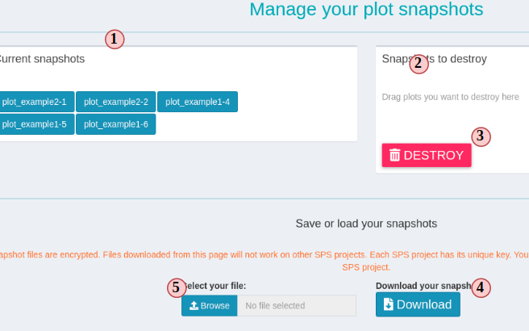

Introduction
systemPipeShiny (SPS) extends the widely used osystemPipeR (SPR) workflow environment with a versatile graphical user interface provided by a oShiny App. This allows non-R users, such as experimentalists, to run many systemPipeR’s workflow designs, control, and visualization functionalities interactively without requiring knowledge of R. Most importantly, SPS has been designed as a general purpose framework for interacting with other R packages in an intuitive manner. Like most Shiny Apps, SPS can be used on both local computers as well as centralized server-based deployments that can be accessed remotely as a public web service for using SPR’s functionalities with community and/or private data. The framework can integrate many core packages from the R/Bioconductor ecosystem. Examples of SPS’ current functionalities include: (a) interactive creation of experimental designs and metadata using an easy to use tabular editor or file uploader; (b) visualization of workflow topologies combined with auto-generation of R Markdown preview for interactively designed workflows; (d) access to a wide range of data processing routines; (e) and an extendable set of visualization functionalities. Complex visual results can be managed on a ‘Canvas Workbench’ allowing users to organize and to compare plots in an efficient manner combined with a session snapshot feature to continue work at a later time. The present suite of pre-configured visualization examples include different methods to plot a count table: PCA, t-SNE and plots of other clustering methods; volcano plots, data mining plots including heatmaps, and more. The modular design of SPR makes it easy to design custom functions without any knowledge of Shiny, as well as extending the environment in the future with contributions from the community.
An example web instance for testing SPS online is available here. At the time of writing, there are five interactive tutorials embedded in this instance that users can access from the upper-right corner. Each tutorial introduces major functionalities of SPS.
Installation
The systemPipeShiny package can be installed from a user’s R console as follows.
If the user’s OS is Linux then one may need to install the following dendencies. The following example applies to Ubuntu.
sudo apt-get install libv8-dev
sudo apt-get install libssl-dev
sudo apt-get install libcurl4-openssl-dev
libcurl4-openssl-dev may not be required for Ubuntu > 18.04.
On other Linux distributions, the install commands may be slightly different.
Main functionalities
Currently, SPS includes two main functional categories: (1) a workbench for designing and configuring data analysis workflows (WF), and (2) a data visualization (VS) toolbox (Fig 1). The WF module allows to write and to modify configuration files required for running workflows in systemPipeR. The VS part provides a rich set of plotting tools to visualize the results of individual steps in systemPipeR workflow. The latter includes a Canvas functionality that allows to arrange many plots one page, save their configuration and revisit the saved page at a later time.
 Figure 1. SPS Structure
Figure 1. SPS Structure
Within the functional categories, SPS functions are modularized in sub-components, here referred to as SPS tabs that are similar to menu tabs in other GUI applications that organize related and inter-connected functionalies into groups. On the backend, SPS tabs are based on Shiny modules and stored in individual files. This modular structure is highly extensible and greatly simplifies the design of new SPS tabs by both users and/or developers. Details about extending existing tabs and designing new ones are provided in an advanced user section.
Example workflow with toy RNA-Seq data
The following sections illustrate the main functionalities SPS using an analysis workflow for RNA-Seq data as an example.
Load package
Load the systemPipeShiny package in your R session.
Initialize SPS project
Before launching the SPS Shiny App, a project environment needs is created with the following commands.
sps_tmp_dir <- tempdir()
spsInit(app_path = sps_tmp_dir, change_wd = FALSE, project_name = "SPSProject")
## [SPS-INFO] 2020-09-29 16:30:12 Start to create a new SPS project
## [SPS-INFO] 2020-09-29 16:30:12 Create project under /tmp/Rtmp39Vq0j/SPSProject
## [SPS-INFO] 2020-09-29 16:30:12 Now copy files
## [SPS-INFO] 2020-09-29 16:30:12 Create SPS database
## [SPS-INFO] 2020-09-29 16:30:12 Created SPS database method container
## [SPS-INFO] 2020-09-29 16:30:12 Creating SPS db...
## [SPS-DANGER] 2020-09-29 16:30:12 Db created at '/tmp/Rtmp39Vq0j/SPSProject/config/sps.db'. DO NOT share this file with others
## [SPS-INFO] 2020-09-29 16:30:12 Key md5 73c77ebed14283e344ccf05671b2a130
## [SPS-INFO] 2020-09-29 16:30:12 SPS project setup done!
sps_dir <- file.path(sps_tmp_dir, "SPSProject")
For this toy example, the project directory structure is written to a temp directory on a user’s system. For a real project, it should be written to a defined and user controlled location on a system rather than a temp directory. The following spsInit
By default, spsInit creates a folder under the current working directory of a user’s R session. The name of this directory is SPS_ + today's date in ISO 8601 format, e.g. SPS_20200929. The file and directory structure is organized as follows.
SPS_xx/
├── server.R |
├── global.R | Most important server, UI and global files, unless special needs, `global.R` is the only file you need to edit manually
├── ui.R |
├── deploy.R | Deploy helper file
├── config | Important app config files. Do not edit them if you don't know
│ ├── sps.db | SPS database
│ ├── sps_options.yaml | SPS default option list
│ └── tabs.csv | SPS tab information
├── data | App example data files
│ ├── xx.csv
├── R | All SPS additional tab files and helper R function files
│ ├── tab_xx.R
├── README.md
├── results | Not in use for this current version, you can store some data been generated from the app
│ └── README.md
└── www | Internet resources
├── about | About tab information
│ └── xx.md
├── css | CSS files
│ └── sps.css
├── img | App image resources
│ └── xx.png
├── js | Javascripts
│ └── xx.js
├── loading_themes | Loading screen files
│ └── xx.html
└── plot_list | Image files for plot gallery
└── plot_xx.jpg
Launch SPS
By default, your working directory should be set inside that project folder automatically. If you are using Rstudio, global.R file will be opened for you. This is the only file that you need to make custom change if there is any.
In your global.R, scroll down to the bottom, you should see:
sps_app <- sps(vstabs = c("data_example", "plot_example1", "plot_example2"),
plugin = "", server_expr = {
msg("Custom expression runs -- Hello World", "GREETING",
"green")
})This is the SPS main function. You can load/unload tabs by providing tab IDs in vstabs argument, like c("tab1", "tab2). Open config/tabs.csv or use spsTabInfo() to see what tabs IDs can be load and other tab information. Currently you can only load/unload visualization tabs, the key word vs under column “type”; essential framework tabs(core) and workflow tabs (wf) are loaded automatically and these tabs cannot be modified. The developer section will teach you how to create your own tabs.
For this vignette example, we will use as it is, so now you can run the SPS by typing shiny::runApp() in console or click on the 
Run App button on top right corner in Rstudio. The app should be launched. Click on the “Continue to app” button on the welcome screen and you should see SPS main dashboard like this one (Fig.2):
 Figure 2. SPS UI
Figure 2. SPS UI
All SPS tabs are well classified into WF and VS part. We will start from WF management.
Workflow management
Workflow management in SPS helps you to prepare a data analysis workflow files in systemPipeR (SPR) format. SPR is another R package that runs a WF in “command line + R code” manner. To run a SPR WF, you need to prepare three very important files: a metadata(targets) file that contains sample information, a workflow step file(Rmarkdown format) that defines the WF steps and a WF config file that helps the program to set up your directory. In SPS, one can easily prepare all of these three files in SPS tabs under “Workflow Management” section. You can find them at the left side navigation bar (Fig2 a-b).
Under current version of SPS, we only help you to prepare and check format of these files. One should save these files and run a WF in SPR. Directly running a SPR WF in SPS will be supported in an upcomming release.
Prepare a target file
Read “Structure of targets file” section in SPR vignette to better undertand the structure of this file.
Now let us follow the order below to prepare a target file for a RNAseq project (Fig.3 A):
- Choose “Targets” from navigation bar;
- Select either “Example PE” or “Example SE”" for using a pair-end/single-end target file, then choose “confirm” on the pop-up. You will see the exmaple is loaded like Figure 3A.
- You can edit, right click to add/remove rows/columns (The first row is treated as column names);
- SPR target file requres a header and you can edit it here. Headers should start with “#”;
- The left section can help you to check sample statistics and file existence. Choose any column you want from the dropdown to check and watch the statistics bar change in this section;
- Click on “Add to task” can help you to check if your target file has any formatting problem. You should see a green success pop-up if everything is right;
- Now your target file is ready and you can click “save” to download it and later use in a SPR project.
- Click on the “-” button on the “Workflow Progress”, you should see the “Targets file” becomes green.
 Figure 3. A. Workflow Management - Targets File
Figure 3. A. Workflow Management - Targets File
Prepare a workflow file
In SPR, workflows are defined in Rmarkdown files, you can read details and obtain them here.
Now let us follow the order below to see how SPS helps you to prepare a WF file for a RNAseq project (Fig.3 B):
- Choose “Workflow File” from navigation bar;
- Choose “Example Rmd” to load an RNAseq WF;
- You can see the WF steps are displayed like a tree structure;
- Check all steps in the WF that you want to include. You can skip (leave blank) some steps but it may cause the WF to fail. Read more SPR instructions before do so.
- Click on the “Plot steps” will show a flow chart of what the step execution orders will be when you run the WF in SPR.
- Click “Report preview” generates a preview of what the final report will look like for current RNAseq WF, but in the preview, no code is evaluated.
- If you are satisfied with your WF file, click “Add to task” to update the workflow preparation progress just like it is for “targets file”.
- Now choose “Save New Rmd” to save this new WF file to later be used a SPR RNAseq project running.
 Figure 3. B. Workflow Management - Workflow File
Figure 3. B. Workflow Management - Workflow File
Prepare a configuration file
In SPR, the config file SPRconfig.yaml is required to define information like project path, targets file path and more. Normally, this file is generated automatically when one starts a SPR project, but if any modification is made, one needs to update this config file. For example, like we are now using SPS to prepare targets file and WF file and when we download these new files, file names and locations may be changed. In this case, we can update the config file in SPS (Fig.3 C):
- Choose “Targets” from navigation bar;
- Choose “Example” to load an RNAseq config file;
- Edit the file content and follow yaml format. You may need to update the target file and WF file name and location in the “targets” and “Rmd” lines here.
- Once your editing is done, click “Add to task” to update the progress;
- Now your new config file is ready and you can click “Save” to download it;
- The progress tracker should all become green, which means you are ready to run the RNAseq workflow in SPR.
 Figure 3. C. Workflow Management - Config File
Figure 3. C. Workflow Management - Config File
Finish WF management
If you have followed this instruction so far, the three most important WF files have been created. You can copy them over to your SPR RNAseq project root and start to generate results.
Visualize workflow results
In the previous step that we have prepared files for running a SPR RNAseq workflow. Now assume that the workflow has been successfully run and we have obtained some results. In this part, we will use an example count table (RPKM normalized) to demonstrate how to use the VS components.
VS tabs in SPS are sub-defined into two small groups, data tabs and plot tabs. A data tab is where you prepare, filter and preprocess data. A plot tab is where the actual plots are generated. A plot tab requires at least one dataset from a data tab. Therefore, we need to first prepare data in a data tab, depending on the preprocess method we choose, we will be given different plot options (going to different plot tabs).
In this part, we will first load the raw count table and preprocess it in “Data Tab Example”, generate some plots in “Plot Tab Example”, and finally compare plots in the “Canvas” tab.
Load raw count data
Follow instructions in Figure 4A:
- Select “Data Tab Example” tab from the left;
- Click “Start with this tab”, it will be hidden after package requirement check has passed in the background. So it is not displayed in the figure.
- Let us load an example RPKM read count table. If you upload your own table, the first column must be “Genes” and the rest of columns are treated as samples and they must be numeric values only.
- You can click on box below each column name to filter data.
- You can export your filtered data into clipboard, csv files, Excel …
- After the data filtration, we can start to preprocess data. Here are two methods you can choose from the left dropdown menu: “Do Nothing” does not change the filtered data, and “PCA” calculates PCs based on samples. Let us just try “Do Nothing”;
- When the data is preprocessed, plot options will be displayed in the below. You need to scroll down a little to see. “Do Nothing” will give you the option for a bar plot. Click on the plot image will redirect you to the corresponding tab.
 Figure 4 A. VS - data tab
Figure 4 A. VS - data tab
Create a plot
Follow instructions in Figure 4B:
- Skip this step if you jumped directly from the “Data Tab Example”, otherwise select “Plot Bar” to start;
- Click “Start/Reload”, this button will validate if you have the required data set. If yes, you will see plot options and other UI.
- Click on “Render/Snapshot plot” to create the first plot. In SPS, the first time clicking on “Render” button creates a preview of the plot. From the second time and on, clicking on this button will take a “snapshot” of the plot. In SPS a snapshot is plot frozen with particular set of input data and plot options. It is isolated from the original plot tab and you cannot modify it anymore. It is similar to a screenshot but you can still interact within the plot. You will have a better understanding when we reach the Canvas section.
- Now you can interact with plot. Try to hover your mouse and move around the plot. There are many interactive components on the plot. Read more of what you can interact with a Plotly plot.
- There is a tiny triangular icon on the right bottom corner of the plot where you can drag it to resize the plot to at most your window width and unlimited height;
- A panel of plot selection tools including a screenshot button is on the top right;
- Let us take a snapshot by clicking “Render”. You should see a blue message pop up from the right bottom of your screen.
- You can change the plot title by changing the text. This example plot tab only provides very simple plot controls. Change the text and watch how the plot title change.
- Change a title and click “Render” again to take a second snapshot.
 Figure 4 B. VS - plot tab
Figure 4 B. VS - plot tab
Snap shots and Canvas
Canvas
SPS Canvas is a place to display snapshots. Snap shots can come from different plot tabs, or the same plot tab with different plot options. Here you can combine plots together to a big scientific figure and compare plots with different plotting options side by side.
If you have followed the instructions so far, you should have at least two snapshots and we can start to use Canvas.
- Select “Canvas” tab;
- You will see your snapshots in “Current snapshots” box. If you do not want to see any of them, drag it to the right side so it will not be rendered on Canvas.
- Click “Refresh Canvas” to render the Canvas for a quick glimpse;
- You can change some Canvas settings on top;
- In the “bar plot” section, we took two snapshots, one with original plot title and one with custom title. If you made the change, you can see it is reflected on Canvas. Move your mouse on the plots, you can see they are still interactive. Then, when you move the mouse near the top of a plot, a title section will show up and you can drag it to reposition your plot.
- Similar to a plot tab, you can resize any plot on Canvas by dragging the bottom right corner of a plot.
 Figure 5 A. Canvas
Figure 5 A. Canvas
Now go back to Load raw count data section and select “PCA” option in step 6 to reprocess and then go to PCA plot tab and repeat instructions in Create a plot to create and snapshot a few PCA plots. The PCA plot tab has an additional plot point size control UI. You can try to take snapshots with different point size. Finally come back to canvas and render all snapshots. You should then be able to see how point size on plots are different in different snapshots. Now you can have a better understanding of the SPS snapshot-Cnavas feature.
Snapshot management
Taking too many snapshots will slow down the app. A good solution is to manage them through the snapshot manage menu. You can access it by clicking the button “Snapshots” with a camera icon on the very top of SPS dashboard banner. It will open up a big menu screen (Fig. 5B).
- The left side displays all current snapshots. The label means the plot tab ID of which plot tab it comes from and the number after the dash means it is the Nth snapshot coming from that particular plot tab;
- If you want to delete any snapshot, drag it to the right;
- Click on “DESTROY” will permanently delete selected snapshots and cannot be recovered.
- Download your current snapshots to a compressed file.
- You can upload saved snapshot file and continue to work on it later.
Due to internet security reasons, snapshot files are encrypted. Each SPS project has an unique key pair. Therefore, it is not possible to run a snapshot file in a different SPS project.
Figure 5 B. snapshot management
Advanced features
SPS plugins
We have created many more plots options and they are distributed as “SPS plugins”. A SPS plugin is a collection of SPS tabs that become small R packages. You need to install the plugin like you do with normal R packages by install.packages, BiocManager::install or remotes::install_github(). The plugins(packages) come with SPS tabs, data, and other helper functions. Using spsAddPlugin() function, you are able to load them into SPS framework.
Using spsAddPlugin() without any argument will list all available plugins and instructions to install them.
## [SPS-INFO] 2020-09-29 16:30:12 Current SPS has following plugins
## spsBio Biological plots
## BiocManager::install("systemPipeR/spsBio")
To load a specific plugin:
spsAddPlugin(plugin = "PLUGIN_NAME", app_path = "PATH_OF_SPS")
At this stage, there is only one plugin, the spsBio: plots for biological data visualization. It is under testing and please expect unstableness. Under your project directory:
Inside your SPS project root, in the global.R file, specify that you want to load the plugin to app and start the app like normal:
sps_app <- sps(vstabs = c("data_example", "plot_example1", "plot_example2"),
plugin = "spsBio", server_expr = {
msg("Custom expression runs -- Hello World", "GREETING",
"green")
})
Configuration
App options
App options in SPS are controlled by “SPS options”. These options can change app appearance, debugging level, server server behaviors, etc. The valid options can be found and change on the global.R file. They are similar to Shiny options, but unlike shiny options are single values, SPS options are passed using the Option(sps = list(...)) function in global.R as a group. To view all options and their default, valid values(’*’ means any value is okay):
## mode: list(default = "local", other = "server")
## loading_screen: list(default = TRUE, other = FALSE)
## loading_theme: list(default = "vhelix", other = "*")
## use_crayon: list(default = TRUE, other = FALSE)
## verbose: list(default = FALSE, other = TRUE)
## admin_page: list(default = FALSE, other = TRUE)
## admin_url: list(default = "admin", other = "*")
## warning_toast: list(default = TRUE, other = FALSE)
To view a single option value, use spsOption(opt = "OPTION_NAME"); to overwrite a single option, use spsOption(opt = "OPTION_NAME", value = "NEW_VALUE").
Note: Do not worry if you set some invalid values, on app start, sps() will check all SPS options, ignore unknown values and set invalid values back to default. You will see warning messages on console to tell you specifically what is wrong with your options.
| mode |
running mode |
“local” |
“server” |
| warning_toast |
show security warnings? |
TRUE |
FALSE |
| loading_screen |
show loading screen? |
TRUE |
FALSE |
| loading_theme |
loading screen theme |
“vhelix” |
any string |
| use_crayon |
colorful console message? |
TRUE |
FALSE |
| verbose |
more details for SPS functions? |
TRUE |
FALSE |
| admin_url |
admin_page query url |
“admin” |
any string |
some details:
- mode: this option will change how the upload files are selected.
- local: You can choose file from server side, and it is a direct link, no file will be copied to server. Most often used when you are on you own computer. It is still choosing files from the server side, because you are using your own computer as a Shiny server.
- server: Choose files from the client side, and upload as a temp file to the server.
- If you are on you own computer, there is no difference, but
local mode can avoid copy your files to temp. If you are deploying the app to cloud, please use server mode
- warning_toast: A toast pop-up message when you are under some dangerous options when app starts.
- loading_theme:
loading_screen must be TRUE. Only one theme for now, we will add more in future.
- verbose: Give you more information on debugging.
- admin_url: the admin page url , will be added in an upcoming version, a preview can be seen by adding “/?admin” to the end of app url, e.g. “https://tgirke.shinyapps.io/systemPipeShiny/?admin”.
Tab configurations
Tabs are registered(defined) by the tabs.csv file under SPS project config folder. It contains information for all the tabs. Do not modify it if you don’t plan to build new tabs. See developer section for how to operate this file.
To control what tabs to appear(load/unload) on SPS, pass the tab IDs of tabs you want to see to vstabs = argument on sps()
sps_app <- sps(vstabs = c("ID1", "ID2", ...))tabs.csv has all the tab IDs. Under current version of SPS, you can only load/unload tabs in the “vs” type. Tabs under “core” and “wf” types are unable to change.
Extend SPS
As a framework, SPS allows users to add/remove/customize individual tabs. At current version, you can only modify tabs in VS part(data tabs, plot tabs). Use newTabData to add a new data tab and newTabPlot for a plot tab. These functions will help you to create the tab file, store it to the R folder in your SPS project, and register tab information by adding records to config/tabs.csv. Most arguments are self-explanatory or can be easily understood by reading the the help file.
How to deploy the application
There is a deploy.R file in the SPS project root and you can use it to deploy the app to shinyapps.io. You can use this file to set up your account and deploy the app. SPS is a deploy-ready framework. If you set up your account correctly, you can deploy it as soon as the project is created. It is recommended to create -> test/run -> deploy a Shiny app from Rstudio and follows this instruction.